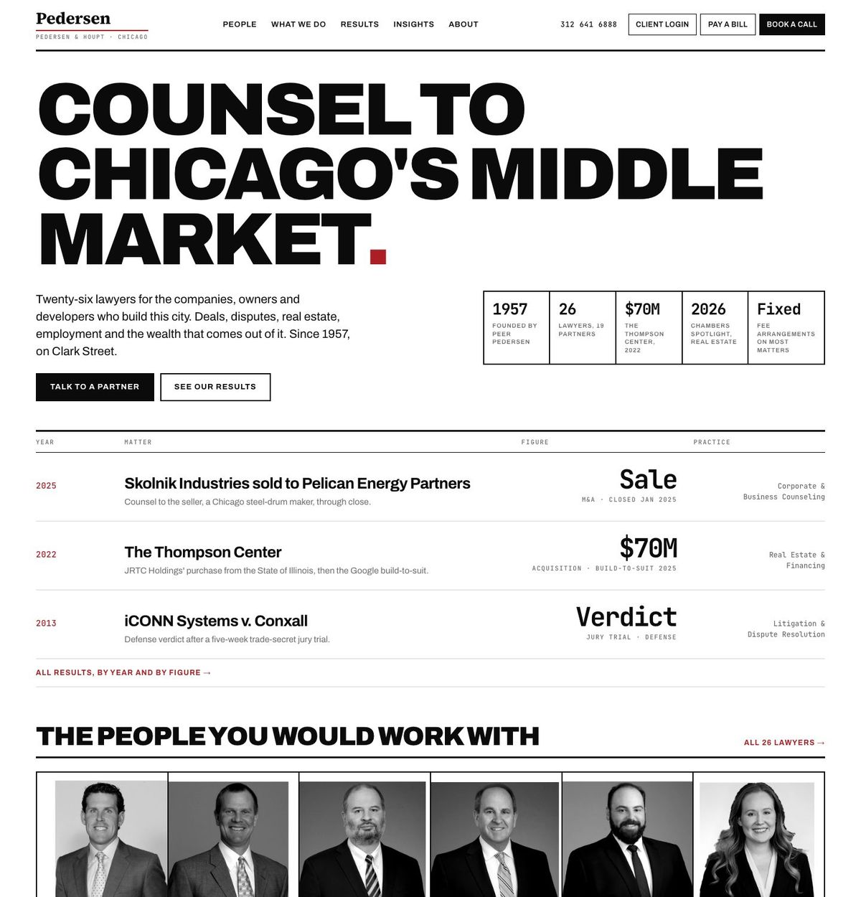
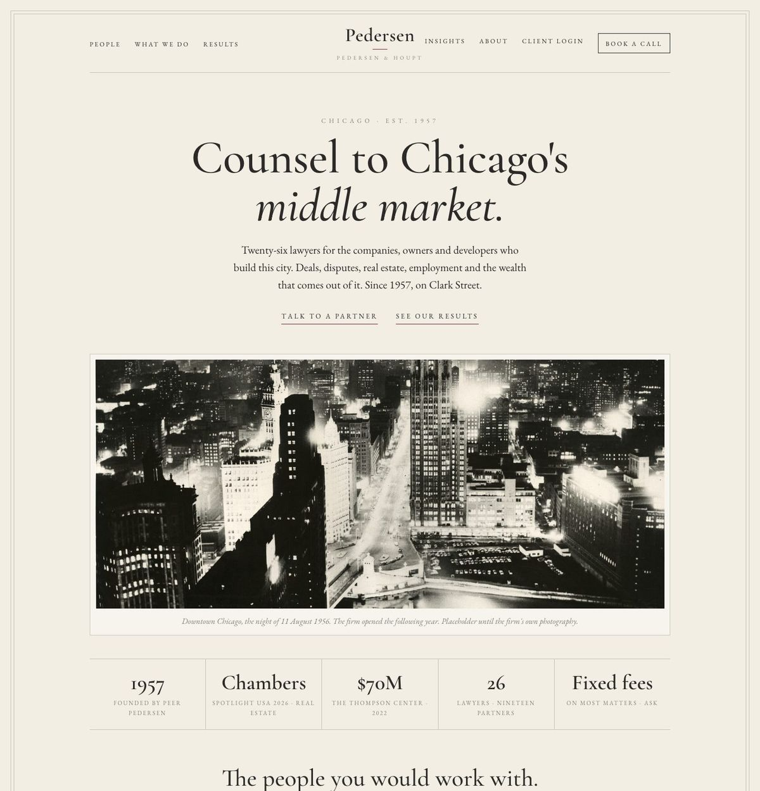

The same two pages, built three ways. Same words, same six people, same three matters, same attorney page for Eric J. Kordish, so the only thing that changes between them is the design. Attorney photographs are the firm's current headshots; the Chicago photographs are placeholders until the firm's own photo day.
The firm as an address and a room. Photography of the city and, after the photo day, the people. A warm serif, a plain grotesk, the firm's red as the only accent.

Evidence as the visual system. Matters, dates and figures set at display size in a heavy grotesk and a mono, black on white, the red as a rule. The city in black and white.

Classical and quiet. Centered, ivory and charcoal, Garamond and small capitals, arched portraits, a hairline frame, the history told with archival photography.